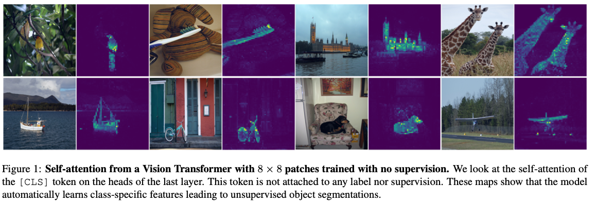
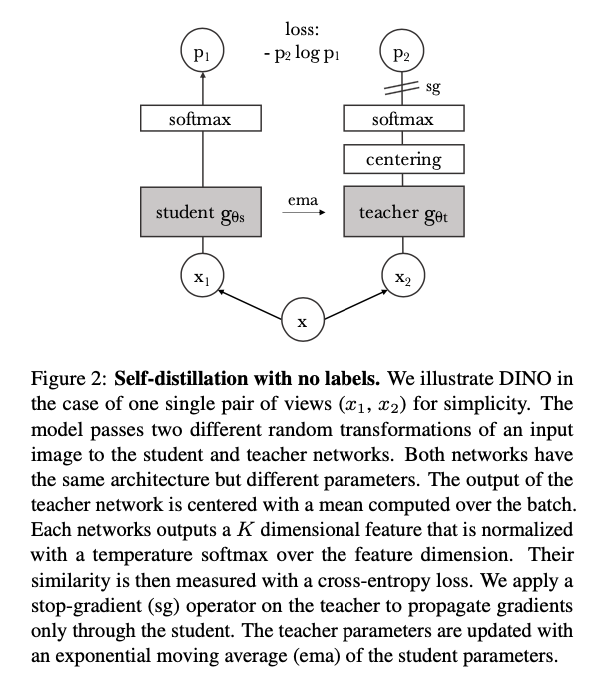
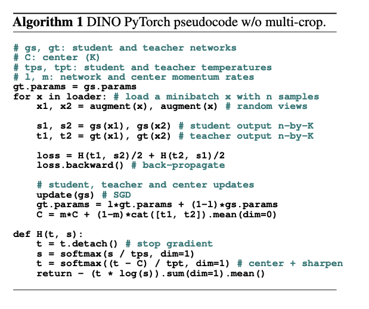
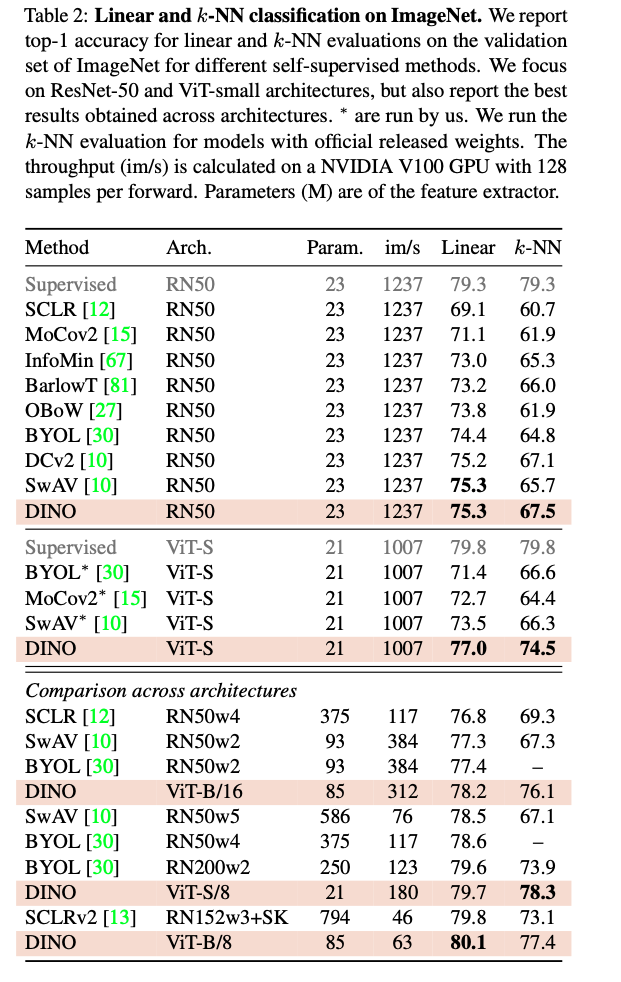
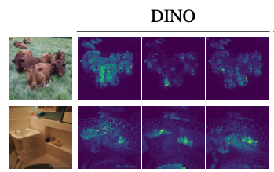

1. Read the title and make an opinion of what’s in the paper (e.g., the area, the task)
Year: 2021
Emerging Properties in Self-Supervised Vision Transformers
This is an image based tasks and as I’ve seen their blogpost, seemingly adapts well to video as well. Self-Supervision has been a new wave that is sweeping through with transformer, so this paper looks at the extension of that into vision transformers (ViT).
2. Read the abstract well and form a hypothesis of
- What’s new in the paper?
- Do you have a clear overview about what the paper is all about?
In this paper, we question if self-supervised learning provides new properties to Vision Transformer (ViT) [19] that stand out compared to convolutional networks (convnets).
This clearly shows that the paper is looking at the comparison of the two.
They make a few observations:
first, self-supervised ViT features contain explicit information about the semantic segmentation of an image, which does not emerge as clearly with supervised ViTs, nor with convnets
Second, these features are also excellent k-NN classifiers, reaching 78.3% top-1 on ImageNet
Our study also underlines the importance of momentum encoder, multi-crop training, and the use of small patches with ViTs
This should be particularly useful information as I try to understand what this paper contributes.
They give the name Dino too:
called DINO, which we interpret as a form of self-distillation with no labels.
I like easy to remember names, as it gives my brain something to hold on to and easily remember them by.
3. Look at the images and extract a set of “questions” about what is not clear about their method from the images. Now your job is to answer these questions by reading the paper.
These header results are quite impressive. I wonder how hand picked these are, or if the model is more general.

Figure 2 is an excellent short diagram of their method. It seems quite unique to me to use self distillation and this exponential moving average. It seems that this method is learning from its past self, a strong representation of images.

The algorithm is surprisingly simple.

It looks very similar to standard training, except with two models that are subtly tuned.
They also have a beautifully formed table, which highlights their results, while clearly showing a multitude of comparisons, while the supervised method is greyed out for distinction. This table is a 10/10:

4. Read the method aiming to answer your “questions” about the paper. Focus on understanding only the things relevant for the story (i.e., to understand the contribution).
The framework used for this work, DINO, shares the same overall structure as recent self-supervised approaches [10, 16, 12, 30, 33]. However, our method shares also similarities with knowledge distillation [35] and we present it under this angle
The distillation process is still a bit foreign to me, but I see it show up often, so I will learn about it soon. However, they provide a short description:
Knowledge distillation is a learning paradigm where we train a student network gθs to match the output of a given teacher network gθt , parameterized by θs and θt respectively. Given an input image x, both networks output probability distributions over K dimensions denoted by Ps and Pt. The probability P is obtained by normalizing the output of the network g with a softmax function. More precisely,
Also there are some tricks with exactly what is passed to which Student/Teacher. The local views of smaller resolution are passed only to student while global views are passed to both.
Getting it to work
There are a few details in these papers that it is not always easier to determine how many weeks it took them to figure out a small addition that makes the idea work. They discuss a few here:
- Teacher Network is best updated with a exponential moving average (EMA)
- Both ResNets and ViTs can be used as the backbone
- The projection head is a 3 layer MLP with .
- Collapse is avoided by using a centering and sharpening of the momentum teacher. SSL implementations sometimes differ only in their approach to solving this problem.
5. Read the experiments to convince you that the show results are caused by their claim. Be aware that the experiments highlighted are the best scenarios and are fully hyper-parameter tuned.
One result that is a bit alarming is the amount of compute required to run it, but this is also a first release, where there has not been much engineering time spent speeding it up.
Another concern is there seems to be ad hoc results in terms of which attention head is used, so images showing segmentations in certain scenarios, are potentially cherry-picked.
They address it in the appendix by showing a number of results: only two of which I show here:

However, their experiments are overall compelling, and show good results to me. The table shown earlier is a good reference.
6. Make sure you answered all your questions. Did the authors convince you that their story has the effect that they claim?
All in all, this was a great paper in my opinion. Huge, and hard to get through in less than an hour, but there is a lot of good references.
I think vision still struggles from a resolution barrier, and I don’t know if that will just come with compute over time, or if it is a new technique that will enable better resolutions to be processed. Either way, the future is bright.